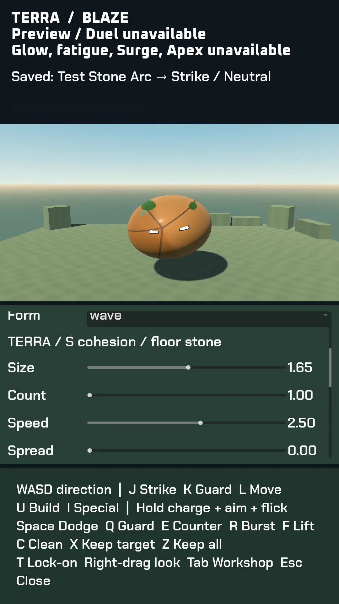

Making the workshop readable
The technique workshop now gives its live dummy a separate view. Larger text and scrolling controls let you adjust a recipe without covering the orb's eyes. The control guide has its own space, so instructions stay clear of the demonstration.
Eighteen recorded input checks passed, including scrolling, saved recipes and the starting camera view. Reviewing the capture also caught things those checks missed: the opening guide is blank, and free look can crop the opponent. Both remain on the correction list.
The duel simulation still needs real combat, building and AI outcomes. This version exercises the controls and workshop; it cannot yet serve as a playable fight. Hands-on game testing follows that integration.
The first reference fight is still the milestone to finish. The newest orb studies improve their lighting and power preparation, but eyes, element shapes and release timing need more work. Films enter the gallery only after they pass the full visual review.
Inside the work

